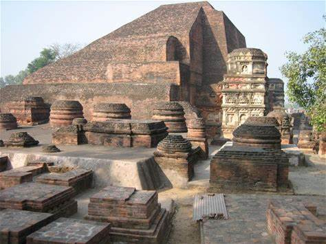
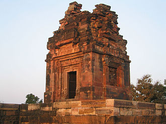
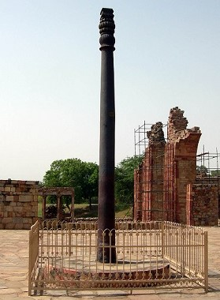
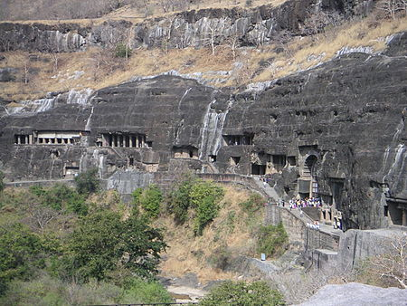

THE GUPTA AND VAKATAKA EMPIRES
-
The fall of Kushana empire towards the middle of 3rd century
AD led to the establishment of the empire of the Guptas.
-
Although the Gupta empire was not as large as the Mauryas, it
kept North India politically united for more than a century.
-
Their period is generally regarded as the
Golden Age of India.
-
Sri Gupta was the founder of Gupta dynasty. Sri Gupta
was followed by his son Ghatotkacha who was followed by
his son Chandragupta I .
-
In the Allahabad Pillar inscription, Sri Gupta and his son
Ghatotkacha are described as Maharaja ("great king"), while
Chandragupta I is called a Maharajadhiraja ("king of great
kings").
Gupta Dynasty
Chandragupta – I (319–335/336 AD)
-
First important king of the Gupta Dynasty; laid the
foundations of the Gupta empire and claimed the title of
maharajadhiraja.
-
He started Gupta era in 319−20 CE, which
presumably marks his accession date. His empire included parts
of modern Bihar, Uttar Pradesh and Bengal; with its capital at
Pataliputra.
-
He enhanced his power and prestige by marrying
Kumaradevi, princess of Lichchhavi clan of Nepal and
issued Chandragupta I-Kumaradevi type gold coins.
Samudragupta was referred to as
Lichchhavi-dauhitra (grandson of the Lichchhavis) in
the famous
Allahabad prashasti.
Samudragupta (335/336–375 AD)
-
Son and successor of Chandragupta I. He was a great conqueror
-
The long inscription in the
pillar of Allahabad (Prayag Prasasti) enumerated by
his court poet Harisena informs about the people and
the countries that were conquered by Samudragupta. Because of
his bravery and generalship, he came to be called the
Napoleon of India by VA Smith.
-
Samudragupta’s arms reached as far as Kanchi, Tamil Nadu,
where the Pallavas were compelled to recognise his suzerainty.
Virasen was his Commander-in-Chief during Southern
campaign. His authority over Java, Sumatra and Malaya island
proves that he maintained a strong navy.
-
Samudragupta is said to have composed numerous poems of high
merit. Some of his coins represent him playing the Veena. He
also performed Ashvamedha sacrifices.
-
The Allahabad pillar inscriptions mention the title
Dharma Prachar Bandhu i.e. he was the upholder of
Brahmanical religion.
-
According to Chinese sources, Meghavarman, the ruler of
Sri Lanka, sent a missionary to Samudragupta for a permission
to build a Buddhist temple at Gaya.
Chandragupta II (c. 376 – 413/15 CE )
-
According to Devi Chandraguptam of
Vishakhadutta, Samudragupta was succeeded by
Ramagupta. Ramagupta was a coward. He surrendered his
queen Dhruvadevi to the Shaka invader.
-
Chandragupta II, the younger brother of Ramagupta, invaded the
enemy’s camp, killed the Shaka ruler and Ramagupta; occupied
the throne and married Dhruvadevi.
-
He proved to be a great ruler and extended his empire by
conquests and matrimonial alliances. He married Kubernaga of
Naga dynasty and married his daughter Prabhavati gupta, with
the Vakataka prince Rudrasena II. Chandragupta thus exercised
indirect control over the Vakataka kingdom.
-
Mehrauli Iron Pillar Inscription (Delhi) claims his
authority over North-Western India and a good portion of
Bengal.
-
His main opponent was Rudrasimha III of the Western
Shaka Kshatraps (of western malwa and Gujarat). Chandragupta
II defeated him which ended the rule of the Shakas on the
Indian subcontinent. This brought Malwa and its Chief city
Ujjain under Gupta rule. Ujjain was made the second
capital by Chandragupta II.
-
He issued silver coins (first Gupta ruler to issue silver
coins).
-
The court of Chandgragupta II at Ujjain was adorned by nine
scholars known as Navaratna, including Kalidasa,
Varahamihiraand Amarsimha.
-
Fa Hsien ( or Faxian), the Chinese piligrim visited
India at his time. During his stay in India, he went on a
pilgrimage to Mathura, Kannauj, Kapilavastu, Kushinagar,
Vaishali, Pataliputra, Kashi, and Rajagriha, and made careful
observations about the empire's conditions. Faxian was pleased
with the mildness of administration. The Penal Code was mild
and offences were punished by fines only. From his accounts,
the Gupta Empire was a prosperous period.
Kumaragupta (AD 415-455)
-
He founded the Nalanda University(near present day
Patna).
-
In the last year of his reign, the empire was invaded by the
Turko-Mongol tribe, the Hunas. During the war with the
Hunas, Kumaragupta died.

Nalanda University, Bihar
Skandagupta (c. 455 – 467 CE)
-
He repulsed the ferocious Hunas attacks twice. The heroic feat
entitled him the title Vikramaditya (also mentioned in
the Bhitari Pillar Inscription).
-
The continuous attack of the Hunas weakened the economy and
the decline of empire began soon after the death of
Skandagupta.
The Hunas
Hunas were a group of Central Asian tribes who, via the Khyber
Pass, entered the Indian Subcontinent at the end of the 5th or
early 6th century. They greatly weakened the Gupta Empire. The
Hunas were ultimately defeated by a coalition of Indian
princes that possibly included the Indian king Yasodharman of
Malwa, Narasimhagupta of the Gupta dynasty, and the Maukharis
(of Kannauj, UP). However, this victory over the Huns could
not revive the Gupta Empire.
Gupta Administration
-
Unlike the Mauryan period, Gupta administration was
highly decentralized and quasi-feudal in
character.
-
Gupta Kings adopted pompous titles such as
Maharajadhiraj which signify that they ruled over the
lesser kings in their empire.
-
The most important officers under the Guptas were called the
kumaramatyas. All important functionaries like the
mantri and the senapati were recruited from this cadre. These
posts were hereditary.
Administrative Units and Their Heads:
| Unit |
Head |
| Desha or Rashtra or Bhukti (Provinces) |
Uparika |
| Pradeshas or Vishayas (districts) |
Vishayapati |
| Vithis (sub-districts) |
- |
| Gram (Village) |
Gramika |
Judiciary
-
The judicial system was far more developed under the Gupta
rulers than in earlier times. For the first time, civil and
criminal laws were clearly demarcated. Theft and adultery were
subjects treated under criminal law. Disputes regarding
various types of property formed the body of civil law.
-
There was the office of mahanadanyaka , who probably
functioned as chief justice. Uparikas and Vishyapatis in their
respective territorial jurisdiction dispensed the judicial
function.
Army
-
The Gupta military organisation was also feudal by character
(though the emperor had a large standing army).
-
The commander in chief of the army was known as
mahabaladhikrita.
-
Horse chariots receded into the background and cavalry came to
the forefront in this period.
Economy
-
The Gupta period witnessed an increase in land taxes but a
decrease in trade and commerce taxes (such as tolls).
-
The king collected taxes varying from
1/4th to 1/6th of the produce. In addition to these
taxes, peasants were also subjected to vishti (forced
Labour) for serving the royal army and officials.
-
During the Gupta’s rule, land grants also included transfer of
royal rights over salt and mines, which were earlier state's
monopoly during Mauryas.
-
The Gupta and post-Gupta period witnessed a comparative
decline in the country’s trade and commerce. The disruption of
the north-western trade route by the Huns was an attributed
factor for this decline.
-
The Guptas issued a large number of gold coins called
dinaras though the gold content is not as pure as
Kushanas.
-
Ports on West coast- Bharoach (Gujarat), Chaul
(Maharashtra), Kalyan (Maharashtra) and Cambay(Gujarat).
-
Ports on East coast- Tamralipti (West Bengal) and
Ghantashala (Andhra Pradesh)
Society
-
Varna system got strengthened due to the large-scale
proliferation of castes, chiefly because of assimilation of
foreigners into the Indian society,. The brahmana supremacy
continued.
-
The social and economic status of shudras improved during this
period. They were now allowed to listen to the Ramayana, the
Mahabharata, and the Puranas.
-
The Position of women declined: The first example of
immolation of widow after death of her husband
(Sati) appeared in Gupta times.
Religion
-
Bhagavatism centered around the worship of Vishnu or
Bhagavad became dominant.
- Idol worship in the temple became a common feature.
-
Gupta kings followed a policy of tolerance towards the
different religious sects. Kumaragupta I is said to have
founded Nalanda.
-
There was an evolution of Vajrayanism as well as
Buddhist tantric cult.
-
Buddhism no longer received royal patronage in the Gupta
period.
Gupta Art and Architecture
-
The Gupta age marks the beginning of main style of temple
architecture in India namely the
Nagara and Dravida style (shikhar style) with
Garbhagriha (shrine room in which the image of God is kept),
Square sanctum sanctorum and a pillared porch.
-
The wonderful paintings of Ajanta, still intact,
indicate that the art of making colors was unmatched in this
period.
-
The Dashavatara Temple at Deogarh (UP) is a major
temple built during this period.

Dashavatara Temple, Deogarh, UP
Metallurgy also saw technological advancement in Gupta
times. The bronze images of Buddha produced on a considerable
scale during this period are an example of advanced technology.
The fact that iron pillar at Mehrauli, Delhi, has not
gathered rust even after fifteen centuries, speaks volumes of
the iron technology prevailing in the Gupta period.

Iron Pillar Mehrauli, Delhi
Literature
-
The Gupta period is considered as the Golden Age of art and
literature in ancient India. The literature in this period was
written in Sanskrit.
-
The two great epics, the Ramayana and the Mahabharata, were
finally compiled in the 4th century CE. It also marks the
beginning of the writing of the Puranas.
Kalidasa
-
Kalidasa was one of the navaratnas of Chandragupta II. His
works are very famous and have been translated in many
European languages. Some of his works are:
-
Meghaduta: about a banished yaksha (a benevolent
nature spirit) asking a cloud to take a message of love to
his wife.
-
Abhijyanashakuntalam: Considered a classic. Its the
story of Sakuntala (wife of Dushyanta and the mother of
Emperor Bharata) told in the epic Mahabharata.
-
Kumarasambhavam: Story about the birth of Shiva and
Parvati’s son, Kumara (Kartikeya).
-
Raghuvamsham: It describes the line of kings of the
Raghu dynasty (also known as the suryavamsa or the solar
dynasty) that includes Raghu, Dasharatha and Rama.
-
Ritusamhara: Poem describing the cycle of seasons.
-
Malvikagnimitram : It is his first play. The play
tells the story of the love of Agnimitra, the Shunga Emperor
at Vidisha, for the beautiful handmaiden of his chief queen.
Synopsis of Abhijyanashakuntalam
Sakuntala is the daughter of the sage Visvamitra and the
apsara Menaka. Abandoned at birth by her parents, Sakuntala
grows up in the secluded hermitage of the sage Kanva.
While Kanva and the other elders of the hermitage are away on
a pilgrimage, Dusyanta, king of Hastinapur, comes hunting in
the forest. He spots Sakuntala. Captivated by her, he marries
her. Soon, he has to leave to take care of affairs in the
capital. She is given a ring by the king, which will
eventually have to be presented to him when she appears in his
court to claim her place as queen.
One day, the anger-prone sage Durvasas arrives when Sakuntala
is lost in her thoughts, and when she fails to attend to him,
he curses her by bewitching Dusyanta into forgetting her
existence. The only cure is for Sakuntala to show the king the
signet ring that he gave her. She later travels to meet him,
and has to cross a river. The ring is lost when it slips off
her hand as she dips it in the water playfully.
On arrival the king is unable to recognize the person he
married and therefore refuses to acknowledge her. Fortunately,
the ring is discovered by a fisherman in the belly of a fish,
and presents it in the king's court. Dusyanta realizes his
mistake - too late. The newly wise Dusyanta is asked to defeat
an army of Asuras, and is rewarded by Indra with a journey
through heaven.
After returning to Earth years later, Dusyanta finds young
Bharata playing with lion cubs and enquires about his parents,
and finds out that Bharata is indeed his son. Bharata is an
ancestor of the lineages of the Kauravas and Pandavas, who
fought the epic war of the Mahabharata. It is after this
Bharata that India was given the name "Bharatavarsha", the
'Land of Bharata'.
Vishakhadatta
-
wrote Mudrarakshasa that narrates the ascent of the
king Chandragupta Maurya to power in India.
-
wrote Devichandraguptam that talks about the king
Ramagupta surrendering his queen Dhruvadevi to a Shaka enemy
when besieged. Ramagupta's younger brother Chandragupta (II)
enters the enemy camp disguised as the queen, and kills the
enemy ruler.
Dandin
-
wrote Dashakumaracharita ('Tale of Ten Princes')
describes the adventures of ten young men, the Kumaras, all of
whom are either princes or sons of royal ministers.
- wrote Kavyadarshana
Bhasa
-
Celebrated writer of 13 sanskrit plays that were used in the
Koodiyattam (a traditional performing art form of Kerala)
plays.
-
The 13 are Svapnavasavadattam, Pratijnayaugandharayana,
Pancharatra, Charudatta, Dootaghatotkacha, Avimaraka,
Balacharita, Madhyamavyayoga, Karnabhara, Urubhanga,
Abhisheka, Dootavakyam and Pratimanataka.
-
Svapnavasavadattam is a romantic narrative about the Vatsa
(one of the Mahajanapadas) king Udayana and Vasavadatta, the
daughter of Pradyota, the ruler of Avanti.
Other Literary works
-
Vishnusharman
wrote Panchatantra in this period. It is a collection
of interrelated animal tales in Sanskrit.
-
Sudraka wrote Mrcchakatikam, a Sanskrit drama
about a noble but impoverished young Brahmin who falls in love
with a wealthy courtesan.
-
Bharavi wrote Kiratarjuniya an epic poem
describing the combat between Arjuna and Lord Shiva (in the
guise of a kirata, or "mountain-dwelling hunter") at
Indrakeeladri Hills in present-day Vijayawada.
-
Amarshima wrote Amarakosha , a sanskrit
dictionary.
-
Bhatti wrote Ravanavadha that focuses on two
deeply rooted Sanskrit traditions, the Ramayana and Panini's
grammar.
-
The ancient text Kama Sutra by the Indian scholar
Vatsyayana is also atributed to this period.
Science and Technology
Aryabhatta
-
Earliest known astronomer of India, who wrote two astronomical
texts called the Aryabhatiya (a text which deals with
astronomy and mathematics) and
Aryabhatasiddhanta (which has not survived and is known
only through references in later works).
-
He was the first to invent zero and to recommend the
use of the decimal system.
Varahamihira
-
A 6th century astronomer, astrologer, mathematician, and
scholar, who was one of the navratnas of Chandragupta II.
-
His famous works were Panchasiddhantika and
Brihatsamhita.
Brahmagupta
-
Brahmagupta was a great mathematician. He hinted the law of
gravitation in Brahma Siddhanta.
Sushruta
-
The Sushruta Samhita is a Sanskrit text on all of the
major concepts of ayurvedic medicine with innovative chapters
on surgery, dates to the Gupta period.
The Vakatakas of the Deccan
-
In peninsular India, especially in northern Maharashtra and
Vidarbha (north-east Maharashtra), the Satavahanas were
succeeded by a local power known as the Vakatakas, who played
an effective role in the political game of the Deccan for more
than two and a half centuries.
-
The Vakatakas were contemporaneous of the Guptas in
northern India.
-
The Vakatakas had matrimonial ties with the Guptas (Rudrasena II
of the royal Vakataka family was married to
Prabhavatigupta, the daughter of Chandragupta II of the
imperial Gupta family)
-
The rock-cut Buddhist viharas and chaityas of the
Ajanta Caves (a UNESCO World Heritage Site) were built
under the patronage of the Vakataka king, Harishena.
-
Very less information is available about their administrative
structure. However, it was assumed to be very similar to the
Guptas.
-
The Vakataka power was followed by that of the Chalukyas of
Badami in Deccan.

Ajanta Caves, Aurangabad, Maharashtra